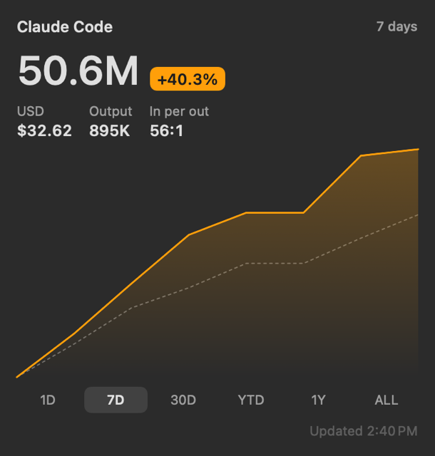
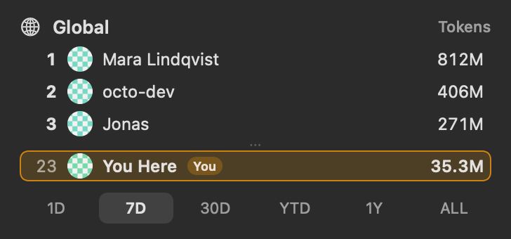
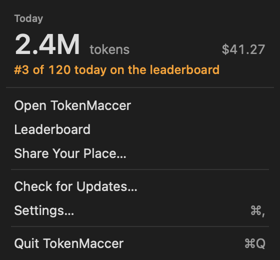

Your tokens, like a stock.
Deine Token, wie eine Aktie.
A Mac widget that shows your Claude Code usage in tokens and USD at API prices.
Ein Mac-Widget, das deinen Claude-Code-Verbrauch in Token und USD zu API-Preisen zeigt.



On your desktop: the usage widget, the leaderboard widget, and today's tokens in the menu bar. Demo numbers, made-up names.
Auf deinem Schreibtisch: das Verbrauchs-Widget, das Leaderboard-Widget und die Token von heute in der Menüleiste. Demo-Zahlen, ausgedachte Namen.
Get started
Loslegen
- Open TokenMaccer.dmg and drag TokenMaccer onto Applications.
- Open TokenMaccer. macOS asks once; click Open.
- Right-click the desktop, choose Edit Widgets… and drag out TokenMaccer.
- Öffne TokenMaccer.dmg und zieh TokenMaccer auf Programme.
- Öffne TokenMaccer. macOS fragt einmal nach; klick auf Öffnen.
- Rechtsklick auf den Schreibtisch, Widgets bearbeiten … wählen und TokenMaccer herausziehen.
Homebrew: brew install --cask valentinherrera/tap/tokenmaccer. Updates install themselves when you quit the app.
Homebrew: brew install --cask valentinherrera/tap/tokenmaccer. Updates installieren sich selbst, wenn du die App beendest.
Stays on your Mac
Bleibt auf deinem Mac
TokenMaccer reads Claude Code's transcripts on your Mac and sends nothing, apart from a daily update check. The leaderboard is optional: join with GitHub, and only your totals per period go to the server, never prompts, projects or file names.
TokenMaccer liest die Transkripte von Claude Code auf deinem Mac und sendet nichts, bis auf eine tägliche Update-Prüfung. Das Leaderboard ist freiwillig: Tritt mit GitHub bei, dann gehen nur deine Summen je Zeitraum an den Server, nie Prompts, Projekte oder Dateinamen.